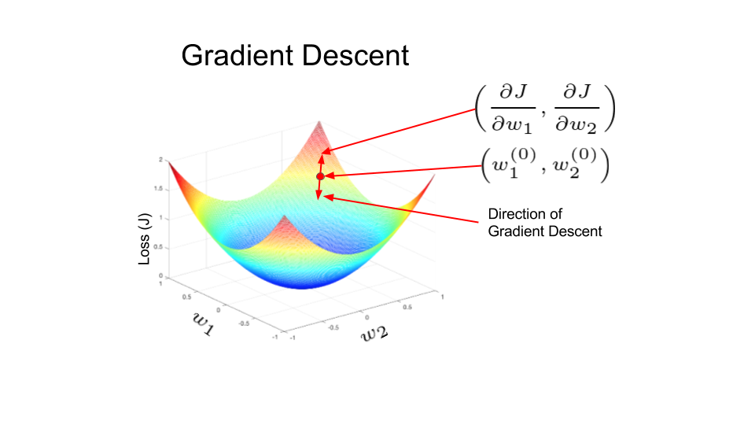

Lviv University
Important
ANN \(\equiv\) Artificial Neural Network
Remember - Neurons, axons, dendrites.
Tip
Inputs to neurons are scaled with weight.
Weight is similar to a strength of synaptic connection.
Computation
ANN computes a function of the inputs by propagating the computed values from input neurons to output neurons, using weights as intermediate parameters.
Learning
Learning occurs by changing the weights. External stimuli are required for learning in bio-organisms, in case of ANNs they are provided by the training data.
Training
Training data contain input-output pairs. We compare predicted output with annotated output label from training data.
Errors
Errors are comparison failures. These are similar to unpleasant feedback modifying synaptic strengths. Goal of changing weights - make predictions better.
Model generalizations
Ability to compute functions of unseen inputs accurately, even though given finite sets of input-output pairs.
Alternative view - computation graph.
When used in basic graph, NNs reduce to classical ML models.
Nodes compute based on inputs and weights.
Goal of NN: learn a function that relates inputs to outputs with the use of training examples.
Settings the edge weights is training.
Consider a simple case of \(d\) inputs and a single binary output. \[ (\overline{X}, y) - \text{training instance} \]
Feature variables: \[ \overline{X}=[x_1, \dots, x_d] \] Observed value: \(y \in {0,1}\), contained in target variable \(y\).
learn the function \(f(\cdot)\), such that \(y=f_{\overline{W}}(\overline{X})\).
minimize mismatch between \(y\) and \(f_{\overline{W}}(\overline{X})\). \(W\) - weight vector.
In case of perceptron, we compute a linear function: \[\begin{align*} &\hat{y}=f(\overline{X}) = sign\left\{\overline{W}^T \overline{X}^T\right\} = sign\left\{\sum\limits_{i=1}^d w_i x_i\right\} \end{align*}\] \(\hat{y}\) means value, not observed value \(y\).
A simplest NN.
We choose the basic form of the function, but strive to find some parameters.
Sign is an activation functionactivation.Perceptron is a single-layer network, as input nodes are not counted.
How does perceptron learn? \[ \overline{W} := \overline{W} + \alpha(y-\hat{y})\overline{X}^T. \] So, in case when \(y \neq \hat{y}\), we can write it as \[ \overline{W} := \overline{W} + \alpha y \overline{X}^T. \]
We can show that perceptron works when data are linearly separable by a hyperplane \(\overline{W}^T X = 0\).
Bias is needed when binary class distribution is imbalanced: \[ \overline{W}^T \cdot \sum_i \overline{X_i}^T \neq \sum_i y_i \] Bias can be incorporated by using a bias neuron.
Problems
In linearly separable data sets, a nonzero weight vector \(W\) exists in which the \(sign(\overline{W}^T X) = sign(y_i)\; \forall (\overline{X}_i,y_i)\).
However, the behavior of the perceptron algorithm for data that are not linearly separable is rather arbitrary.
ML algorithms are loss optimization problems, where gradient descent updates are used to minimize the loss.
Original perceptron did not formally use a loss function.
Retrospectively we can introduce it as: \[ L_i \equiv \max\left\{-y_i(\overline{W}^T \overline{X_i}\right\} \]
We differentiate: \[\begin{align*} &\dfrac{\partial L_i}{\partial \overline{W}} = \left[\dfrac{\partial L_i}{\partial w_1}, \dots, \dfrac{\partial L_i}{\partial w_d}\right] = \\ & = \begin{cases} -y_i \overline{X_i}, & \text{if } sign\{W^T X_i\} \neq y_i,\\ 0, & \text{otherwise} \end{cases} \end{align*}\]
Negative of the vector is the direction of the fastest rate of loss reduction, hence perceptron update: \[\begin{align*} &\overline{W} := \overline{W} - \alpha\dfrac{\partial L_i}{\partial \overline{W}} = \overline{W} + \alpha y_i \overline{X_i}^T. \end{align*}\]
A network with weights \(\overline{W}\) and input \(\overline{X}\) will have a prediction of the form \[\begin{align*} &\hat{y}=\Phi\left( \overline{W}^T \overline{X}\right) \end{align*}\] where \(\Phi\) denotes activation function.
Identity aka linear activation
\[ \Phi(v) = v \]
Sign function
\[ \Phi(v) = sign(v) \]
Sigmoid function
\[ \Phi(v) = \dfrac{1}{1+e^{-v}} \]
tanh
\[ \Phi(v) = \dfrac{e^{2v}-1}{e^{2v}+1} \]
Actually, neuron computes two functions:
We have pre-activation value and post-activation value.
Two more functions that have become popular recently:
Rectified Linear Unit (ReLU)
\[ \Phi(v) = \max\left\{v, 0\right\} \]
Hard tanh
\[ \Phi(v) = \max\left\{\min\left[v, 1\right], -1 \right\} \]
Properties:
Used for k-way classification problems. Used in the output layer.
\[\begin{align*} &\Phi(v)_i = \dfrac{\exp(v_i)}{\sum\limits_{i=1}^k \exp(v_i)}. \end{align*}\]
Softmax layer converts real values to probabilities.
Least squares regression, numeric targets
\[\begin{align*} &L(\hat{y}, y) = (y-\hat{y})^2 \end{align*}\]
Logistic regression, binary targets
\[\begin{align*} &L(\hat{y}, y) = -\log \left|y/2 - 1/2 + \hat{y}\right|, \{-1,+1\} \end{align*}\]
Multinomial logistic regression, categorical targets
\[\begin{align*} &L(\hat{y}, y) = -\log (\hat{y}_r) \text{ - cross-entropy loss} \end{align*}\]
Suppose NN contains \(p_1, \dots, p_k\) units in each of its \(k\) layers.
Then column representations of these layers, denoted by \(\overline{h}_1, \dots, \overline{h}_k\), have \(p_1, \dots, p_k\) units.
Weights between input layer and first hidden layer: matrix \(W_1\), sized \(p_1 \times d\).
Weights between \(r\)-th layer and \(r+1\)-th layer: matrix \(W_r\) sized \(p_{r+1}\times p_r\).
Therefore, a \(d\)-dimensional input vector \(\overline{x}\) is transformed into the outputs using these equations: \[\begin{align*} &\overline{h}_1 = \Phi(W_1^T x),\\ &\overline{h}_{p+1} = \Phi(W_{p+1}^T \overline{h}_p), \forall p \in \left\{1 \dots k-1 \right\} \\ &\overline{o} = \Phi(W_{k+1}^T \overline{h}_k) \end{align*}\] Activation functions operate on vectors and are applied element-wise.
Definition (Aggarwal)
A multilayer network computes a nested composition of parameterized multi-variate functions.
The overall function computed from the inputs to the outputs can be controlled very closely by the choice of parameters.
The notion of learning refers to the setting of the parameters to make the overall function consistent with observed input-output pairs.
Input-output function of NN is difficult to express explicitly. NN can also be called universal function approximators.
Universal approximation theorem
Given a family of neural networks, for each function \(\displaystyle f\) from a certain function space, there exists a sequence of neural networks \(\phi_1,\phi_2,\dots\) from the family, such that \(\phi_{n} \to f\) according to some criterion.
In other words, the family of neural networks is dense in the function space.
Theorem. A multi-layer network that uses only the identity activation function in all its layers reduces to a single-layer network.
Proof. Consider a network containing \(k\) hidden layers, therefore containing a total of \((k+1)\) computational layers (including the output layer).
The corresponding \((k+1)\) weight matrices between successive layers are denoted by \(W_1 ...W_{k+1}\).
Let:
Then, we have the following recurrence condition for multi-layer networks: \[\begin{align*} &\overline{h_1} = \Phi(W_1 x) = W_1 x,\\ &\overline{h}_{p+1} = \Phi(W_{p+1} \overline{h}_p) = W_{p+1}\overline{h}_p \;\; \forall p \in \left\{1 \dots k−1\right\}, \\ &\overline{o} = \Phi(W_{k+1} \overline{h}_k) = W_{k+1} \overline{h}_k. \end{align*}\]
In all the cases above, the activation function \(\Phi(\cdot)\) has been set to the identity function. Then, by eliminating the hidden layer variables, we obtain the following: \[\begin{align*} &\overline{o} = W_{k+1}W_k \dots W_1 \overline{x} \end{align*}\] Denote \(W_{xo}=W_{k+1}W_k \dots W_1\).
Note
One can replace the matrix \(W_{k+1}W_k \dots W_1\) with the new \(d\times m\) matrix \(W_{xo}\), and learn the coefficients of \(W_{xo}\) instead of those of all the matrices \(W_1, W_2, \dots W_{k+1}\), without loss of expressivity.
In other words, we have the following: \[\begin{align*} &\overline{o} = W_{xo} \overline{x} \end{align*}\] However, this condition is exactly identical to that of linear regression with multiple outputs. Therefore, a multilayer neural network with identity activations does not gain over a single-layer network in terms of expressivity.
Linearity observation
The composition of linear functions is always a linear function. The repeated composition of simple nonlinear functions can be a very complex nonlinear function.
DAG Definition
A directed acyclic computational graph is a directed acyclic graph of nodes, where each node contains a variable. Edges might be associated with learnable parameters.
A variable in a node is either fixed externally (for input nodes with no incoming edges), or it is a computed as a function of the variables in the tail ends of edges incoming into the node and the learnable parameters on the incoming edges.
DAG is a more general version of NN.
A computational graph evaluates compositions of functions.
A path of length 2 in a computational graph in which the function \(f(\cdot)\) follows \(g(\cdot)\) can be considered a composition function \(f(g(\cdot))\).
In case of sigmoid function: \[\begin{align*} &f(x) = g(x) = \dfrac{1}{1+e^{-x}} \\ &f(g(x)) = \dfrac{1}{1 + e^{\left[-\dfrac{1}{1+e^{-x}}\right]}} \end{align*}\]
Important
The inability to easily express the optimization function in closed form in terms of the edge-specific parameters (as is common in all machine learning problems) causes difficulties in computing the derivatives needed for gradient descent.
Example
For example, if we have a computational graph which has 10 layers, and 2 nodes per layer, the overall composition function would have \(2^{10}\) nested “terms”.
Derivatives are computed numerically, not algebraically.
Forward phase
Backward phase
Single cycle through all training points is an epoch.
Logistic regression is an algorithm for binary classification.
\(x \in \mathbb{R}^{n_x}, y \in \{0,1\}\).
\(\left\{(x^{(1)},y^{(1)}), ...(x^{(m)}, y^{(m)})\right\}\)- \(m\) training examples.
\(X\) matrix - \(m\) columns and \(n_x\) rows.
\[\begin{align*} &X = \begin{bmatrix} \vdots & \vdots & \dots & \vdots \\ x^{(1)} & x^{(2)} & \dots & x^{(m)} \\ \vdots & \vdots & \dots & \vdots \end{bmatrix} \end{align*}\]
\[ Y = \left[y^{(1)}, y^{(2)}, \dots, y^{(m})\right] \]
\(X \in \mathbb{R}^{n_x,m}\).
Using Numpy syntax:
\(Y \in \mathbb{R}^{1,m}\).
Using Numpy syntax:
Goal
We will strive to maximize \(\hat{y} = P(y=1 | x)\), where \(x \in \mathbb{R}^{n_x}\).
Obviously, \(0 \leq \hat{y} \leq 1\).
Important
If doing linear regresssion, we can try \[ \hat{y}=w^T x + b. \]
But for logistic regression, we do \[ \hat{y}=\sigma(w^T x + b)$, \; \text{where }\; \sigma=\dfrac{1}{1+e^{-z}}. \]
Input
\[ w \in \mathbb{R}^{n_x},\\ b \in \mathbb{R}. \]
Output
\[ \hat{y} = \sigma\left( w^T x + b\right), \]
\[ z \equiv w^T x + b. \]
\(w\) - weights, \(b\) - bias term (intercept)
\(\sigma=\dfrac{1}{1+e^{-z}}\).
For every \(\left\{(x^{(1)},y^{(1)}), ...(x^{(m)}, y^{(m)})\right\}\), we want to find \(\hat{y}^{(i)} \approx y^{(i)}\). \[\begin{align*} &\hat{y}^{(i)} = \sigma\left(w^T x^{(i)} + b\right) \end{align*}\] We have to define a loss (error) function - this will estimate our model.
Quadratic
\[ L(\hat{y}, y) = \dfrac{1}{2}\left(\hat{y}-y)\right)^2. \]
Log
\[ L(\hat{y}, y) = -\left((y\log(\hat{y}) + (1 - y)\log(1 - \hat{y}))\right). \]
Why does it work well?
Consider \(y=0\) and \(y=1\).
\[\begin{align*} &y=1: P(y | x) = \hat{y},\\ &y=0: P(y | x) = 1-\hat{y} \end{align*}\]
We select \(P(y|x) = \hat{y}^y(1-\hat{y})^{(1-y)}\).
\[ \log P(y|x) = y\log(\hat{y}) + (1-y)\log(1-\hat{y}) = -L(\hat{y}, y). \]
\[\begin{align*} y=1:& L(\hat{y},y) = -\log(\hat{y}),\\ y=0:& L(\hat{y},y) = -\log(1-\hat{y}) \end{align*}\]
Cost function show how well we’re doing across the whole training set: \[\begin{align*} &J(w, b) = \dfrac{1}{m} \sum\limits_{i=1}^m L(\hat{y}^{(i)}, y^{(i)}) = \\ & = -\dfrac{1}{m} \sum\limits_{i=1}^m \left[y\log(\hat{y}) + (1 - y)\log(1 - \hat{y})\right]. \end{align*}\]
On \(m\) examples: \[\begin{align*} &\log P(m \dots) = \log \prod_{i=1}^m P(y^{(i)} | x^{(i)}) = \\ & = \sum\limits_{i=1}^m \log P(y^{(i)} | x^{(i)}) = -\sum\limits_{i=1}^m L(\hat{y}^{(i)}, y^{(i)}). \end{align*}\]
Problem
Minimization problem: find \(w,b\) that minimize \(J(w,b)\).

\[ w := w - \alpha \frac{d J(w,b)}{dw}, \\ b := b - \alpha \frac{d J(w,b)}{db} \]
\(\alpha\) - learning rate
\[\begin{align*} &z = w^T x + b ,\\ &a \equiv \hat{y} = \sigma(z),\\ &L(a,y) = -\left[y\log(a) + (1 - y)\log(1 - a)\right]. \end{align*}\]
So, for \(n_x=2\) we have a computation graph:
\((x_1,x_2,w_1,w_2,b)\) \(\rightarrow\) \(z =w_1 x_1+w_2 x_2 + b\) \(\rightarrow\) \(\hat{y}=a=\sigma(z)\) \(\rightarrow\) \(L(a,y)\).
Let’s compute the derivative for \(L\) by a: \[\begin{align*} &\frac{dL}{da} = -\dfrac{y}{a} + \dfrac{1-y}{1-a},\\ &\frac{da}{dz} = a(1-a). \end{align*}\]
After computing, we’ll have \[\begin{align*} &dz \equiv \dfrac{dL}{dz} = \dfrac{dL}{da}\dfrac{da}{dz} = a-y,\\ &dw_1 \equiv \frac{dL}{dw_1} = x_1 dz,\\ &dw_2 \equiv \frac{dL}{dw_2} = x_2 dz, \\ &db \equiv \frac{dL}{db} = dz. \end{align*}\]
GD steps are computed via \[\begin{align*} &w_1 := w_1 - \alpha \frac{dL}{dw_1},\\ &w_2 := w_2 - \alpha \frac{dL}{dw_2},\\ &b := b - \alpha \frac{dL}{db}. \end{align*}\]
Consider now \(m\) examples in the training set.
Let’s recall the definition of the cost function: \[\begin{align*} &J(w,b) = \dfrac{1}{m}\sum\limits_{i=1}^{m} L(a^{(i)}, y^{(i)}, \\ &a^{(i)} = \hat{y}^{(i)}=\sigma(w^T x^{(i)} + b). \end{align*}\] And also \[ \frac{dJ}{dw_1} = \frac{1}{m}\sum\limits_{i=1}^{m}\frac{dL(a^{(i)}, y^{(i)})}{dw_1}. \]
Let’s implement the algorithm. First, initialize \[ J=0,\\ dw_1=0,\\ dw_2=0,\\ db=0 \]
for i=1 to m \[\begin{align*}
&z^{(i)} = w^T x^{(i)} + b, \\
&a^{(i)} = \sigma(z^{(i)}), \\
&J += -\left[y^{(i)} \log a^{(i)} + (1-y^{(i)}) \log(1-a^{(i)})\right], \\
&dz^{(i)} = a^{(i)} - y^{(i)}, \\
&dw_1 += x_1^{(i)} dz^{(i)},\\
&dw_2 += x_2^{(i)} dz^{(i)},\\
&db += dz^{(i)}.
\end{align*}\]
Then compute averages:
\[ J = \dfrac{J}{m}, \\ dw_1 = \dfrac{dw_1}{m}, \; dw_2 = \dfrac{dw_2}{m}, \\ db = \dfrac{db}{m}. \]
\[ w_1 := w_1 - \alpha dw_1,\\ w_2 := w_2 - \alpha dw_2,\\ b := b - \alpha db. \]
We only have 2 features \(w_1\) and \(w_2\), so we don’t have an extra for loop. Turns out that for loops have a detrimental impact on performance.
Vectorization techniques exist for this purpose - getting rid of for loops.
Programming guideline - avoid explicit for loops. \[\begin{align*} &u = Av,\\ &u_i = \sum_j\limits A_{ij} v_j \end{align*}\] To be replaced by
Another example. Let’s say we have a vector \[\begin{align*} &v = \begin{bmatrix} v_1 \\ \vdots \\ v_n \end{bmatrix}, u = \begin{bmatrix} e^{v_1},\\ \vdots \\ e^{v_n} \end{bmatrix} \end{align*}\] A code listing is
So we can modify the above code to get rid of for loops (except for the one for \(m\)).
Let’s examine the forward propagation step of LR. \[\begin{align*} &z^{(1)} = w^T x^{(1)} + b,\\ &a^{(1)} = \sigma(z^{(1)}), \end{align*}\]
\[\begin{align*} &z^{(2)} = w^T x^{(2)} + b,\\ &a^{(2)} = \sigma(z^{(2)}). \end{align*}\]
Let’s recall what have we defined as our learning matrix: \[ X = \begin{bmatrix} \vdots & \vdots & \dots & \vdots \\ x^{(1)} & x^{(2)} & \dots & x^{(m)} \\ \vdots & \vdots & \dots & \vdots \end{bmatrix} \]
Next \[ Z = [z^{(1)}, \dots, z^{(m)}] = w^T X + [b, b, \dots, b] =\\ = [w^T x^{(1)}+b, \dots, w^T x^{(m)}+b]. \]
\[ A = \left[a^{(1)}, \dots, a^{(m)}\right] = \sigma\left(Z\right) \]
Earlier on, we computed \[\begin{align*} &dz^{(1)} = a^{(1)} - y^{(1)}, dz^{(2)} = a^{(2)} - y^{(2)}, \dots \end{align*}\]
We now define \[\begin{align*} &Y = [y^{(1)}, \dots, y^{(m)}],\\ &dZ = [dz^{(1)}, \dots, dz^{(m)}] =\\ &= A-Y = [a^{(1)}-y^{(1)}, \dots, a^{(m)}-y^{(m)}] \end{align*}\]
For \(db\) we have \[\begin{align*} &db = \frac{1}{m}np.sum(dZ),\\ &dw = \frac{1}{m}X dZ^T = \\ & \frac{1}{m}\begin{bmatrix} \vdots & & \vdots \\ x^{(1)} & \dots & x^{(m)} \\ \vdots & & \vdots \\ \end{bmatrix} \begin{bmatrix} dz^{(1)} \\ \vdots\\ dz^{(m)} \end{bmatrix} = \\ & = \frac{1}{m}\left[x^{(1)}dz^{(1)} + \dots +x^{(m)}dz^{(m)}\right]. \end{align*}\]
Now we can go back to the backward propagation algorithm again.
Multiple iterations of GD will still require a for loop.